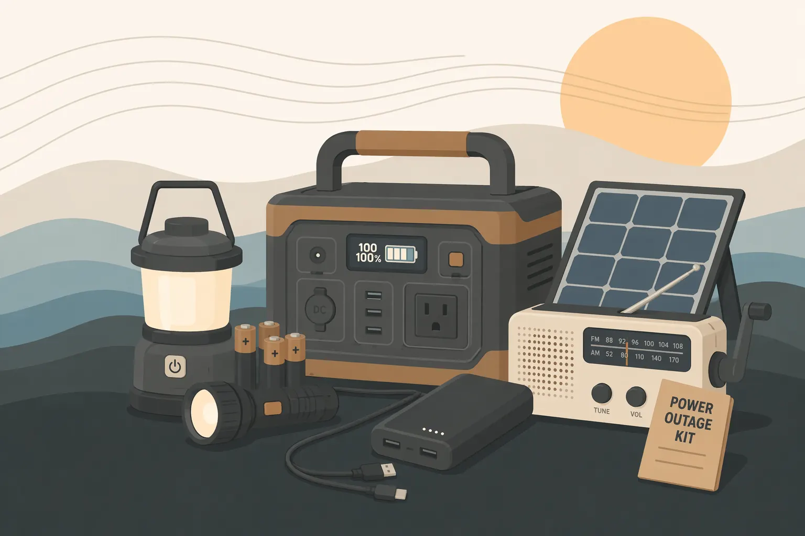
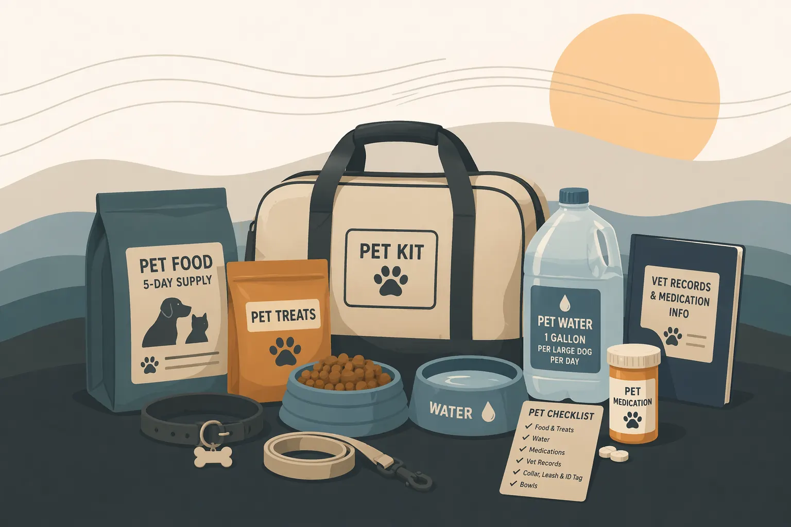
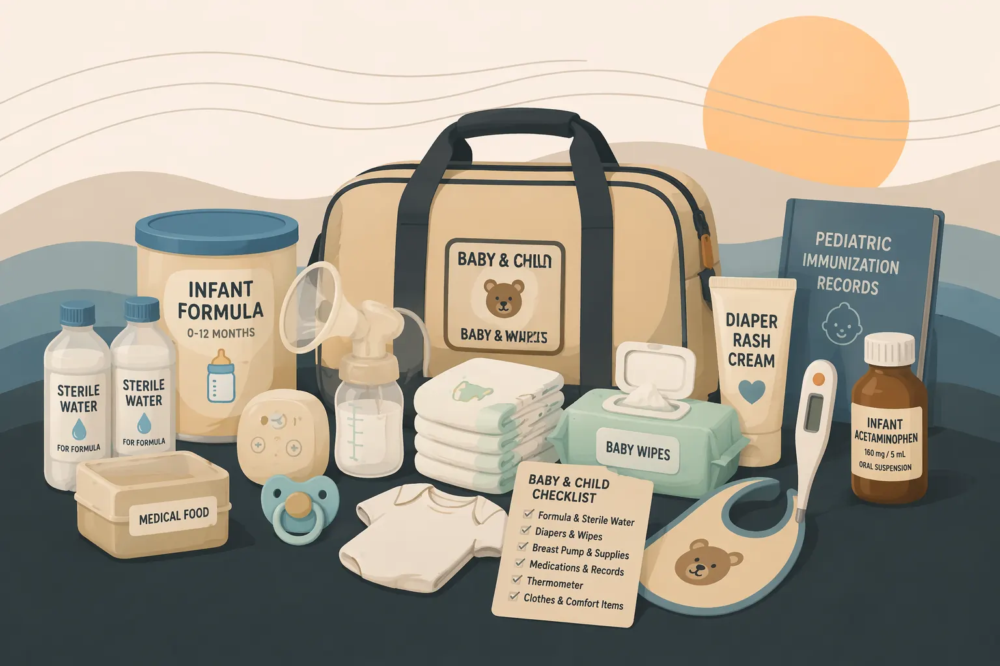
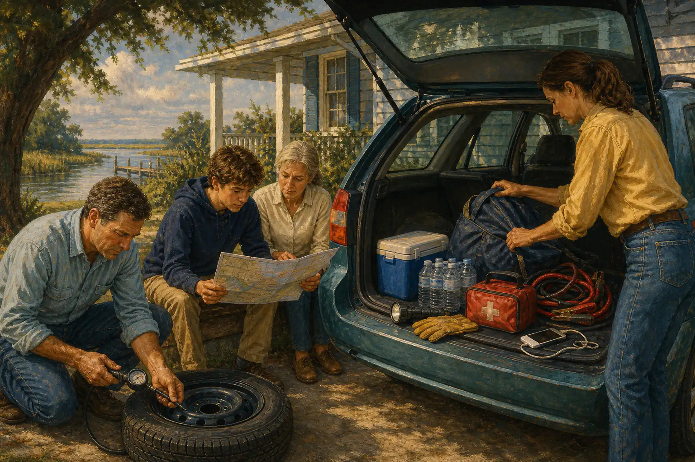

Kit de evacuación
La bolsa junto a la puerta. Qué va dentro y por qué.
Nueve guías de kits, cada una con una lista de verificación imprimible. La guía es donde vive el razonamiento: qué empacar, cuánto y por qué.
La bolsa junto a la puerta. Qué va dentro y por qué.

Cuánto, qué tipo y cómo almacenar y rotar.

Para cortes de energía que duran días, no horas.

Diseñado para lesiones y enfermedades posteriores al huracán.

Qué copiar, dónde guardarlo y por qué importa.

Para los animales en su hogar.

Organizado por edad. Desde bebés hasta niños en edad escolar.

Medicamentos, equipos con electricidad y vulnerabilidad al calor.

Preparación del auto durante todo el año y adiciones para la evacuación.
Apoyar este sitio
Sin anuncios. Sin enlaces de afiliados. Si esto hizo más clara su preparación ante huracanes, puede ayudar a mantener el sitio gratuito y actualizado.
Nota editorial
Esta página fue escrita y revisada por Michael Hendrick el 4 de mayo de 2026. HurricaneSupplyList.com es un proyecto independiente de preparación, sin anuncios ni enlaces de afiliados.
La orientación se contrasta con Ready.gov, el National Hurricane Center, el National Weather Service, FEMA y las oficinas estatales o locales de manejo de emergencias enlazadas en la página.
Use esta guía para prepararse con anticipación. Cuando las autoridades locales emitan órdenes de evacuación, instrucciones de refugio, alertas meteorológicas o orientación médica, siga primero esas fuentes oficiales.